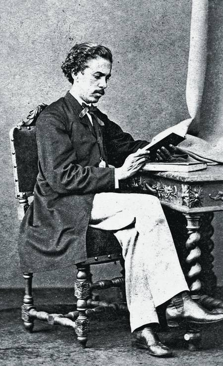

Joaquim Maria Machado de Assis (1839-1908), foi um escritor brasileiro, considerado por muitos críticos, estudiosos, escritores e leitores o maior nome da literatura brasileira. Escreveu em praticamente todos os gêneros literários, sendo poeta, romancista, cronista, jornalista e crítico literário. Testemunhou a Abolição da escravatura e a mudança política no país quando a República substituiu o Império.
Machado de Assis, cujo nome completo é Joaquim Maria Machado de Assis, nasceu no morro do Livramento, Rio de Janeiro, no dia 21 de junho de 1839. Filho de pais humildes, seu pai, Francisco José de Assis, era pintor de paredes e sua mãe, a açoriana Maria Leopoldina Machado de Assis, era lavadeira. Machado ficou órfão de mãe muito cedo e, por isso foi criado com sua madrasta.Em busca de um emprego, com 15 anos, Machado conheceu Francisco de Paula Brito, dono da livraria, do jornal e da tipografia da cidade. No dia 12 de fevereiro de 1855, a “Marmota Fluminense”, jornal editado por Paula Brito. Daí por diante, Machado não parou de escrever na Marmota e de fazer amizades com os políticos e literatos, frequentadores da livraria, onde o assunto principal era a poesia. Em 1856, Machadinho, como era conhecido, entrou para a Imprensa Oficial como aprendiz de tipógrafo. Com 20 anos, Machado de Assis já frequentava os círculos literários e jornalísticos do Rio de Janeiro, capital política e artística do Império.
Em 1864, com 25 anos, publicou o seu primeiro livro de poesias, Crisálidas. Em 1869, casou-se com Carolina Augusta Xavier de Novais, senhora portuguesa que lhe ajudou na revisão dos livros e com quem esteve casado durante 35 anos, em 1872, publicou Ressurreição, o seu primeiro romance. Em 1873, torna-se primeiro oficial da Secretaria de Estado do Ministério da Agricultura, Comércio e Obras Públicas. Continuou escrevendo em jornais e revistas. Seus escritos eram publicados em folhetins, de seguida, tornando-se livros.Continuou escrevendo em jornais e revistas. Seus escritos eram publicados em folhetins, de seguida, tornando-se livros.em outubro de 1904, morre sua mulher, auxiliar e companheira. Em sua homenagem, Machado escreve o poema "A Carolina". Em 1908, licenciado das funções públicas, mesmo debilitado, escreveu seu último romance “Memorial de Aires”.
“Cada qual sabe amar a seu modo; o modo, pouco importa; o essencial é que saiba amar.”
“Há coisas que melhor se dizem calando.”
"Creia em si, mas não duvide sempre dos outros."
"A saudade é isto mesmo; é o passar e repassar das memórias antigas."